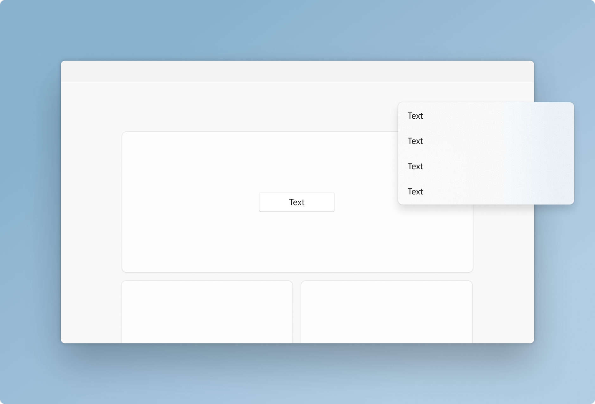
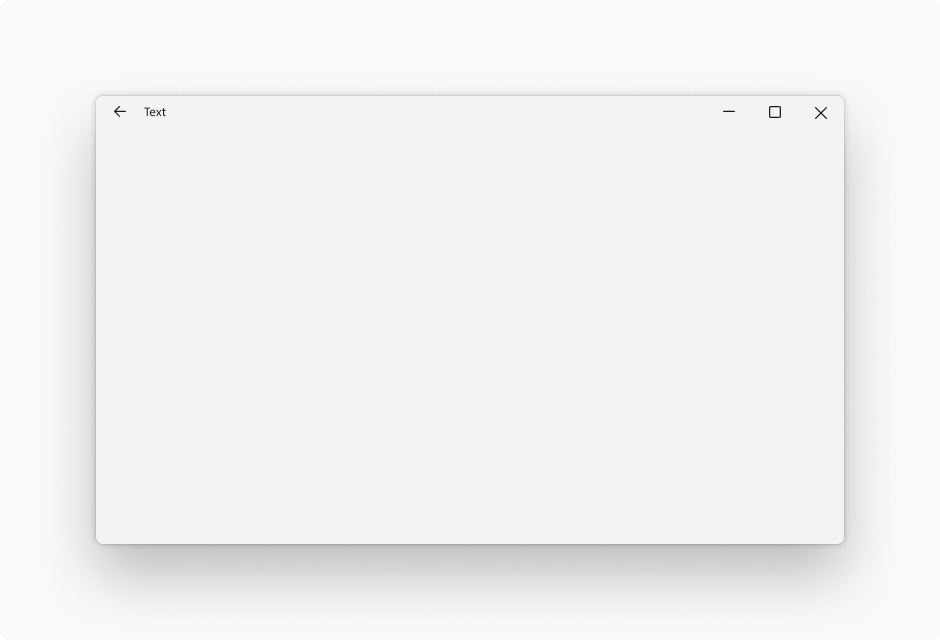
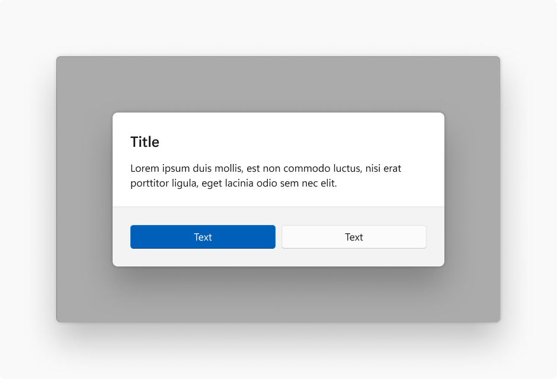
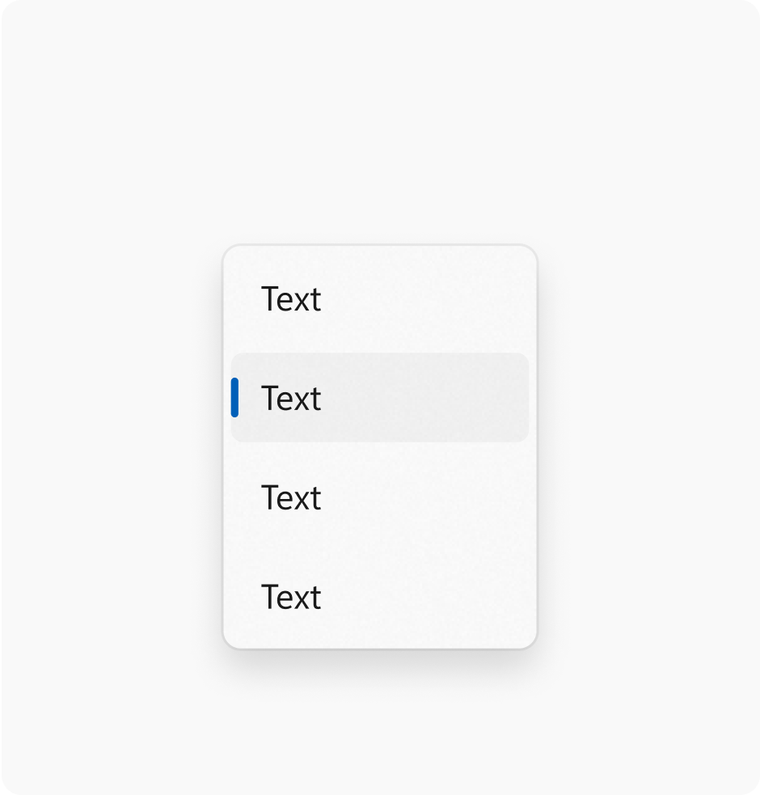
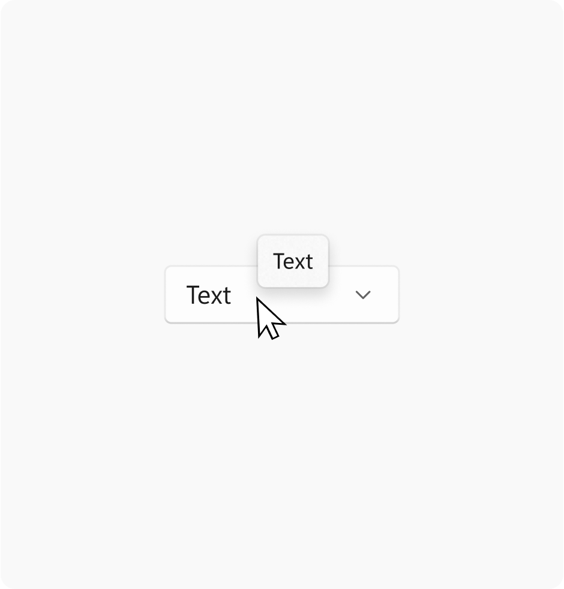
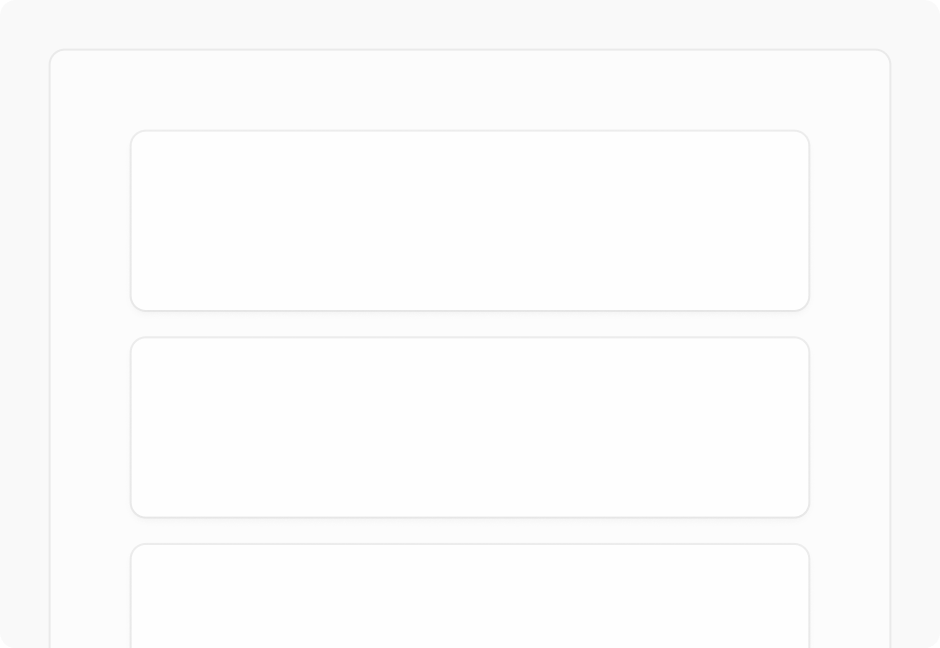
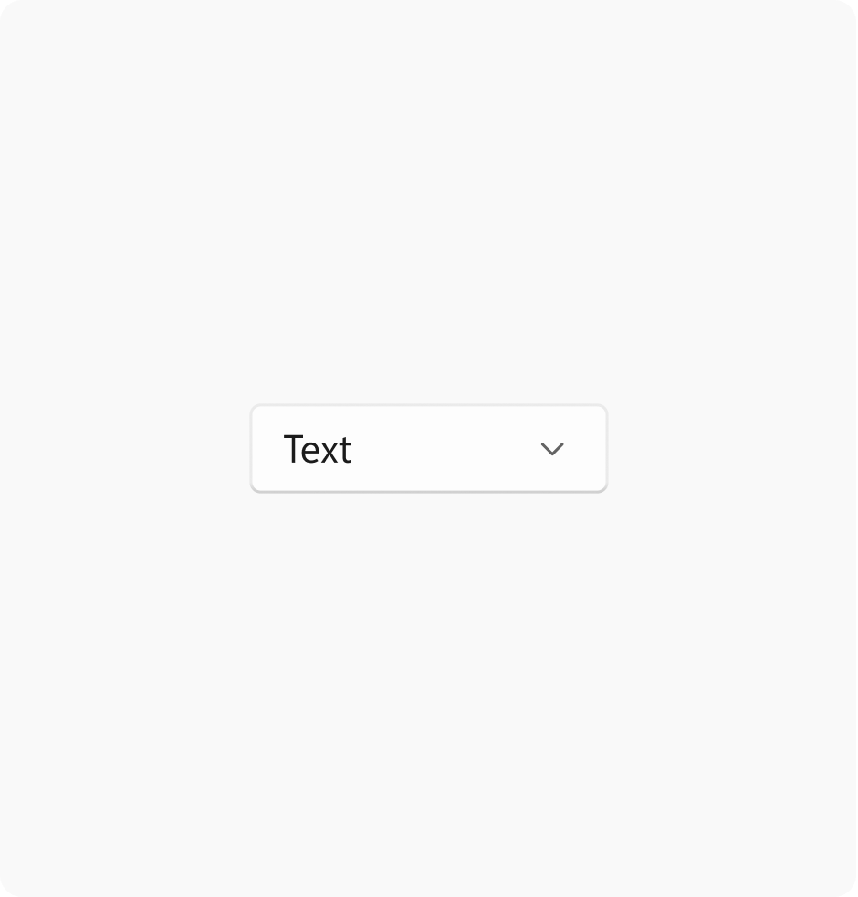
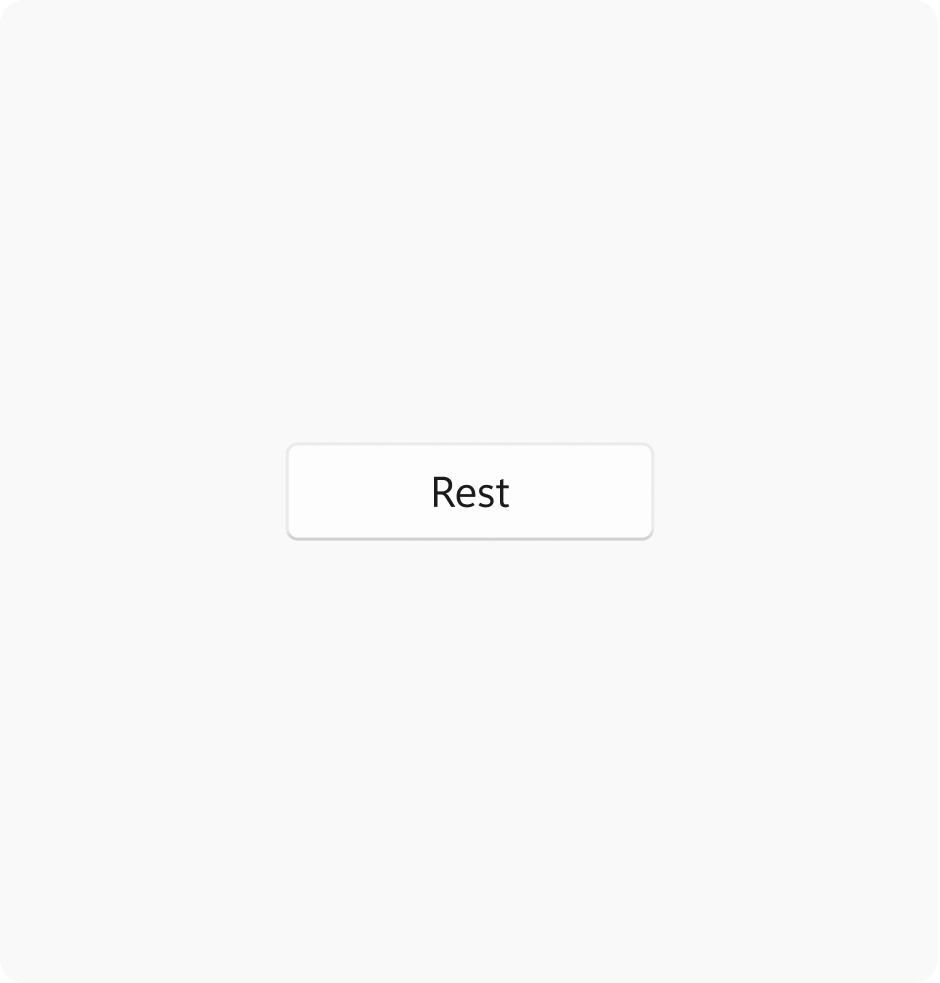
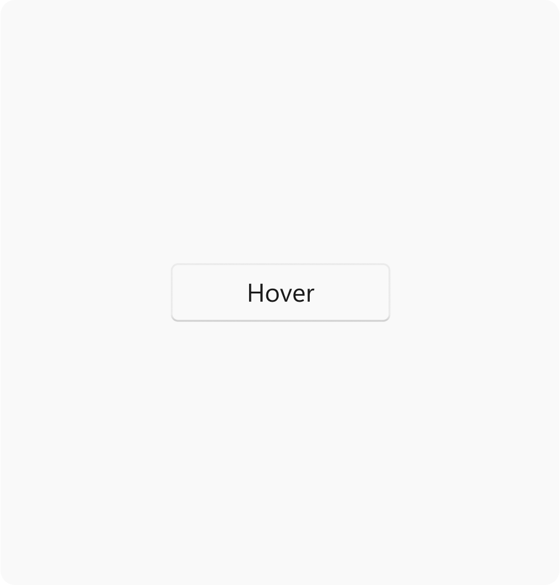
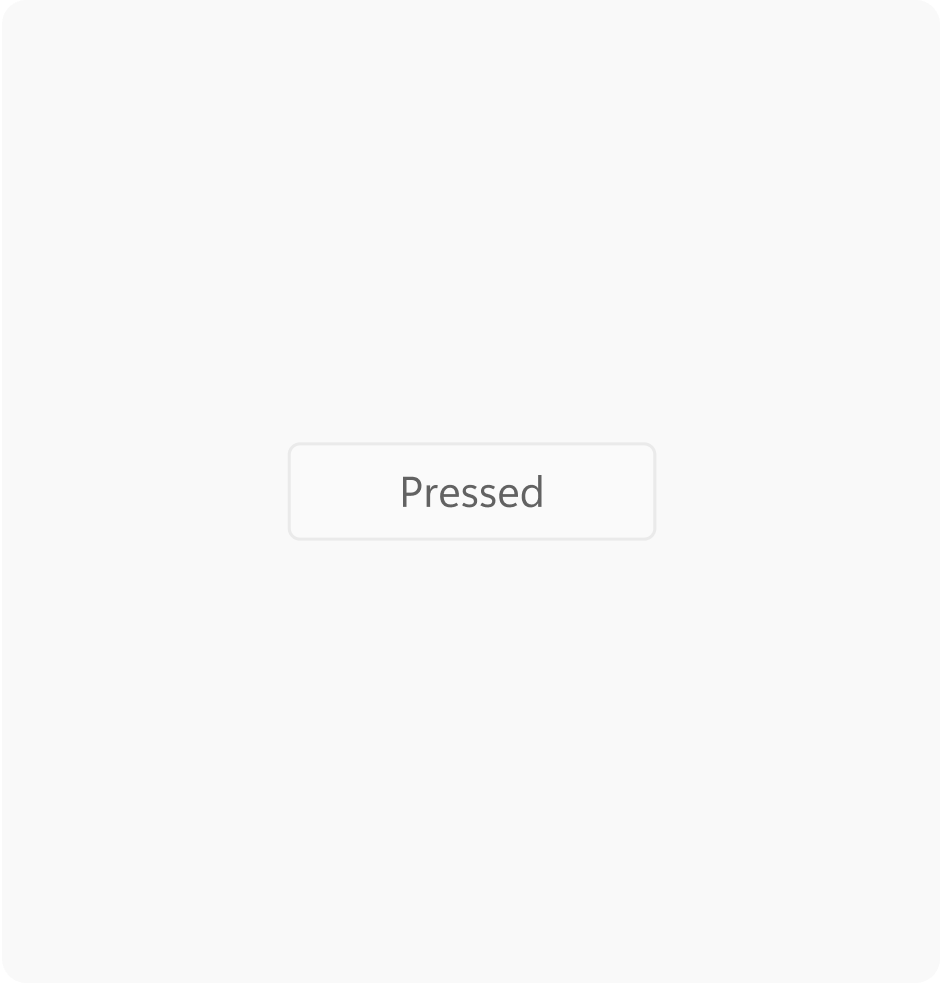

Elevation in Windows
Windows 11 uses layering and elevation as its foundation for app hierarchy. Hierarchy communicates important information about how to navigate within an app while keeping the user's attention focused on the most important content. Layering and elevation are powerful visual cues that modernize experiences and help them feel coherent within Windows.
Tip
This article describes how the Fluent Design language is applied to Windows apps. For more information, see Fluent Design - Elevation.
Elevation

Elevation is the depth component of the spatial relationship one surface has to another with respect to their position on the desktop. When two or more objects occupy the same location on the screen, only the object with the highest elevation will be rendered at that location.
Shadows and contour (outlines) are used on controls and surfaces to subtly communicate an object's elevation, and to help draw focus where needed within an experience. Windows 11 uses the following values to express elevation with shadow and contour.

Window
Elevation value: 128
Stroke width: 1

Dialog
Elevation value: 128
Stroke width: 1

Flyout
Elevation value: 32
Stroke width: 1

Tooltip
Elevation value: 16
Stroke width: 1

Card
Elevation value: 8
Stroke width: 1

Control
Elevation value: 2
Stroke width: 1
Layer
Elevation value: 1
Stroke width: 1
Controls in Windows 11 vary their elevation and contour to indicate state. The intensity of the rendered shadow changes depending on the theme at parity of value.

Rest
Elevation value: 2
Stroke width: 1

Hover
Elevation value: 2
Stroke width: 1

Pressed
Elevation value: 1
Stroke width: 1
Layering


Layering is the concept of overlapping one surface with another, creating two or more visually distinguished areas within the same application.
Note
Layering in Windows is tightly coupled with the use of materials. Please reference the materials section for specific guidance on how those are applied.
Windows 11 uses a two-layer system for applications. These two layers create hierarchy and provide clarity, keeping users focused on what's most important.
- The base layer is an app's foundation. It is the bottommost layer of every app, and contains controls related to app menus, commands, and navigation.
- The content layer focuses the user on the app's central experience. The content layer may be on contiguous element, or separated into cards that segment content.